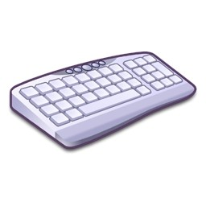

Переферийные устройства
персонального компьютера
Устройства ввода |
Устройства вывода |
| Клавиатура - устройство, позволяющее пользователю вводить информацию в компьютер (устройство ввода). Представляет собой набор клавиш (кнопок), расположенных в определённом порядке. |  Монитор-это устройство оперативной визуальной связи пользователя с управляющим устройством и отображением данных, передаваемых с клавиатуры, мыши или центрального процессора. Принципиальное отличие от телевизора заключается в отсутствии встроенного тюнера, предназначенного для приёма высокочастотных сигналов эфирного (наземного) телевещания и декодера сигналов изображения. Кроме того, в большинстве мониторов отсутствует звуковоспроизводящий тракт и громкоговорители. Монитор-это устройство оперативной визуальной связи пользователя с управляющим устройством и отображением данных, передаваемых с клавиатуры, мыши или центрального процессора. Принципиальное отличие от телевизора заключается в отсутствии встроенного тюнера, предназначенного для приёма высокочастотных сигналов эфирного (наземного) телевещания и декодера сигналов изображения. Кроме того, в большинстве мониторов отсутствует звуковоспроизводящий тракт и громкоговорители. |
 Мышь - координатное устройство для управления курсором и отдачи различных команд компьютеру. Управление курсором осуществляется путём перемещения мыши по поверхности стола или коврика для мыши. Клавиши и колёсико мыши вызывают определённые действия, например: активация указанного объекта, вызов контекстного меню, вертикальная и горизонтальная (в специализированных мышках) прокрутка веб-страниц, окон операционной системы и электронных документов. Мышь - координатное устройство для управления курсором и отдачи различных команд компьютеру. Управление курсором осуществляется путём перемещения мыши по поверхности стола или коврика для мыши. Клавиши и колёсико мыши вызывают определённые действия, например: активация указанного объекта, вызов контекстного меню, вертикальная и горизонтальная (в специализированных мышках) прокрутка веб-страниц, окон операционной системы и электронных документов. |  Печатающее устройство - это внешнее периферийное устройство компьютера, предназначенное для вывода текстовой или графической информации, хранящейся в компьютере, на твёрдый физический носитель, обычно бумагу или полимерную плёнку, малыми тиражами (от единиц до сотен). Печатающее устройство - это внешнее периферийное устройство компьютера, предназначенное для вывода текстовой или графической информации, хранящейся в компьютере, на твёрдый физический носитель, обычно бумагу или полимерную плёнку, малыми тиражами (от единиц до сотен). |
 Сканер - устройство, выполняющее считывание расположенного на плоском носителе (чаще всего бумаге) изображения для передачи информации на расстояние или для преобразования его в цифровой формат. Сканер - устройство, выполняющее считывание расположенного на плоском носителе (чаще всего бумаге) изображения для передачи информации на расстояние или для преобразования его в цифровой формат. |  Акустические системы - устройство для воспроизведения звука, оконечное звено усилительного тракта (источник — усилитель — АС); состоит из акустического оформления и вмонтированных в него излучающих головок (обычно динамических). Акустические системы - устройство для воспроизведения звука, оконечное звено усилительного тракта (источник — усилитель — АС); состоит из акустического оформления и вмонтированных в него излучающих головок (обычно динамических). |